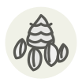

Pine nut
Pignon de pin
| Latin name | Pinus pinea |
|---|---|
| Family | Nuts & seeds |
| Origin | Mediterranean basin |
| Season | All year |
| Flavour | Nutty · Buttery · Delicate |
| Typical price | 40–80 €/kg |
What it is
Roman legionaries carried pine nuts as marching rations, and jars of them were found preserved in the ashes of Pompeii. Each stone pine takes decades to bear cones — patience, shelled one kernel at a time.
In the kitchen
They burn treacherously fast: toast them in a dry pan and never take your eyes off. Golden is perfect; brown is bitter.
Goes with
Basil Parmesan Spinach Zucchini Fig Honey
Same species
Korean pine nut Pine nut oil Pinyon pine nut
Also used with
Cauliflower mushroom Garlic scape Gunpowder green tea New Zealand spinach Omija (schisandra berry) Zante currant
Something wrong here, or missing? Tell us